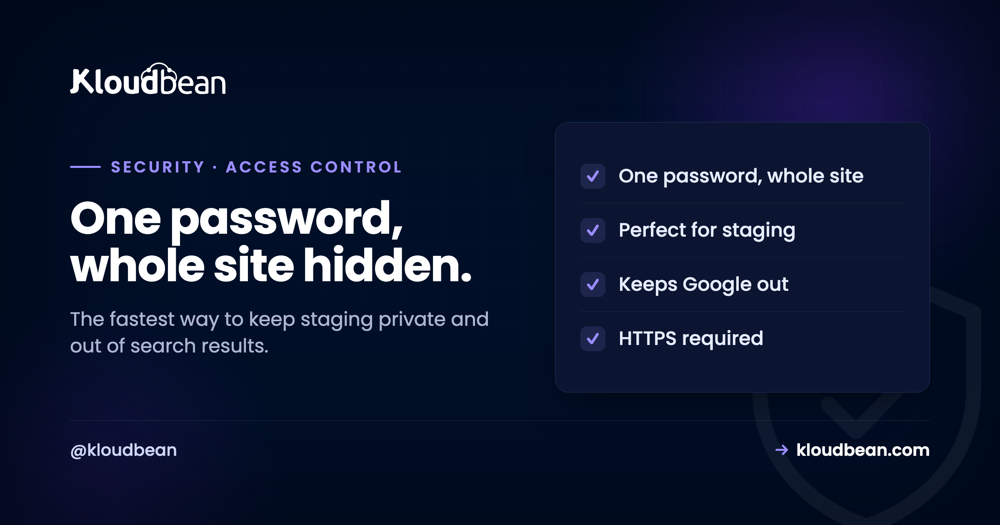

The Basic Auth Gate: The Fastest Way to Hide a Site From the World

You have a staging site, or a pre-launch site, or an internal tool that is not ready for the public. You want it reachable by your team and your client, and invisible to everyone else, including the bots and, crucially, search engines. The heaviest way to do that is to build a login system. The lightest way, and often the right one, is an HTTP Basic Auth gate: a plain username and password box that the server shows before your app runs at all. Get past it and you see the site. Fail it, and there is nothing to see. It is decades old, it is unglamorous, and for the job of hiding something in progress it is hard to beat.
HTTP Basic Authentication is a simple challenge the web server or proxy issues before your application handles a request: the browser shows its built-in username and password prompt, and only a correct credential lets the request through. It gates the whole site or app with one shared credential, rather than authenticating individual users, so it is ideal for staging sites, pre-launch sites, internal tools, and anything you want hidden from the public and from search engines. It must run over HTTPS, because the credentials are only encoded, not encrypted. It is not a replacement for real user login: there are no accounts or roles, just a gate. On Kloudbean a Basic Auth gate is available to put in front of an app in a couple of clicks.
What a Basic Auth gate actually is
It is a checkpoint that runs before your application, not inside it, and that distinction is the whole idea.
When a browser requests a page protected by Basic Auth, the server responds with a 401 challenge instead of the page. The browser then pops up its native username and password dialog, the user types a credential, and the browser resends the request with those details attached. If they match, the server serves the site; if not, the challenge repeats and the app is never reached. Because this happens at the web-server or proxy layer, the gate protects everything behind it uniformly: every page, every asset, the whole app, with no code changes inside the application itself. You typically set one shared username and password (or a small handful) that everyone who should have access uses.
That is the key mental model: Basic Auth is a gate, not a login system. It does not know or care who you are as an individual, it only checks whether you hold the shared key. For hiding a whole environment that simplicity is a feature, not a shortcoming.
What it is perfect for
Anywhere you need a whole site hidden fast, with no per-user identity required, Basic Auth is the right-sized tool.
Staging and pre-launch sites. This is the classic use, and it prevents a genuinely common disaster: an unprotected staging site getting crawled and indexed by search engines, so your half-finished duplicate starts showing up in results and competing with, or replacing, your real site. A Basic Auth gate stops that cold, because search engines hit the 401 and see nothing to index. Internal tools and dashboards that a small team shares and that have no need for individual accounts. Coming-soon and holding pages you want a client or a stakeholder to preview privately. Anything not ready for the public that you need to lock quickly while you finish it. In all of these the requirement is the same: keep the world out, let a few known people in, and do it in minutes.
Worth noticing that the first case has two halves, and people usually only solve one. Creating the staging copy is one job, gating it is another, and an ungated staging copy is worse than no staging copy at all. Kloudbean handles both in the same place: staging environments for WordPress and Laravel, and a Basic Auth gate you switch on in front of an app rather than hand-editing a server config. If your staging site exists today with nothing in front of it, that's the thing to go fix before you finish reading.
staging.yoursite.com, indexes the duplicate, and now two versions of your content compete. A Basic Auth gate is the simplest reliable fix, because the crawler never gets past the 401.
The one rule: it must be over HTTPS
There is a real security caveat, and it is not optional, so here it is plainly.
Basic Auth credentials are only Base64-encoded, which is encoding, not encryption. Anyone who can read the raw traffic can trivially decode them. Over plain HTTP that means the username and password travel in effectively readable form, which is unacceptable. Over HTTPS, the entire connection including those credentials is encrypted in transit, so the encoding detail stops mattering. The rule is therefore simple and firm: only ever put a Basic Auth gate on a site served over HTTPS. Since a modern site should be on HTTPS anyway, with free auto-renewing certificates this is not an extra chore, just a box that must be ticked before you rely on the gate.
The practical trap is the certificate expiring on a staging domain nobody's watching, which quietly turns the gate into theatre without anyone noticing. Free auto-renewing SSL is the fix, and it's included on Kloudbean, so the HTTPS precondition holds by default rather than depending on someone remembering a renewal on an environment they only visit before a release.
What it is not (don't use it for user login)
Basic Auth is a gate, and stretching it into a login system is where people get into trouble.
It has no concept of individual accounts, roles, or permissions: everyone shares the same credential, so you cannot tell who did what, cannot give one person more access than another, and cannot revoke a single user without changing the shared password for everybody. The browser also caches the credential for the session, and there is no tidy log-out. None of that matters for gating a staging site, and all of it matters for a real product. So use Basic Auth to hide an environment, and use a proper authentication system, with real accounts, roles, and ideally a second factor, for anything where individual users log in. When you need to know and control who is who, this is the wrong tool, and reaching for it there is a classic mistake.
Even better: gate plus allowlist
For staging and internal tools, the strongest simple setup combines two blunt controls.
A Basic Auth gate asks "do you have the password?" and IP allowlisting asks "are you coming from a trusted network?" Put both in front of a staging site and an attacker needs to be on your allowlisted network and hold the credential, which for a non-public environment is ample. The two controls fail in different ways, so together they cover each other: if the password leaks, the allowlist still blocks outsiders, and if someone reaches an allowlisted network, they still need the password. Neither is real user authentication, but for the job of keeping the public out of something unfinished, the pair is genuinely hard to get past.
Both live at the same layer, and it helps if they live in the same place too. On Kloudbean the gate and IP Access Control (allow or deny, CIDR ranges) are two settings on the same app rather than a proxy config and a firewall rule you maintain separately, which matters mostly because a control you have to SSH in to change is a control that drifts out of date.
Sort your requirements by which control actually does the job
Most of the trouble with Basic Auth comes from asking it to do work that belongs somewhere else. So take whatever you're actually trying to prevent, find it in the left column, and note where the answer lives.
| What you want | What actually delivers it | Why |
|---|---|---|
| Search engines never index staging | The gate | A robots.txt rule is a polite request. A 401 is a refusal, and there is no page behind it to index. |
| A client previews privately | The gate | One shared credential, shared once. No accounts to create for people who will never come back. |
| Only your office or VPN can connect | IP allow-listing, at the host | The gate cannot see where a request came from. Different question, different control. |
| The credential is safe in transit | TLS, at the host | Base64 is encoding. Without HTTPS the gate is decoration. |
| Know which individual did what | Your app's auth | A shared password attributes nothing. Everyone is the same person to the gate. |
| Give one person more access than another | Your app's auth, with roles | The gate is all-or-nothing by design. There is no partial pass. |
| Revoke one person's access | Your app's auth | Rotating the shared password locks out the whole team, which is why nobody ever does it. |
| A clean log-out | Your app's auth | Browsers cache Basic credentials for the session and there is no tidy way to clear them. |
| Filter hostile traffic to a public site | A firewall or WAF layer | The gate blocks everybody or nobody, which is no use on a site that has to stay open. |
The top four rows are the host's half, and they're the reason the platform came up in the staging, HTTPS, and allow-list sections above rather than as a closing pitch: on Kloudbean the gate is a setting on the app, free auto-renewing SSL satisfies row four without you scheduling anything, IP Access Control covers row three, and staging for WordPress and Laravel means the environment you want to hide is created in the same place you hide it.
The bottom five rows are the part no host supplies, and that includes us. There is no hosting plan anywhere that turns a shared credential into accounts, roles, or an audit of who did what, because none of that information exists at the gate. If you find yourself wanting any of those five, stop stretching Basic Auth and go build real authentication, ideally with a second factor. The gate is excellent at exactly one thing: making a whole environment invisible to everyone who does not hold the key. Ask it for anything more and it will fail quietly, which is the worst way for a security control to fail.
Two doors along
Basic Auth pairs naturally with IP allowlisting for private environments, and both sit above the Shorewall firewall and Fail2ban baseline. For the HTTPS the gate depends on, custom domains and SSL; for the response-header layer, the security headers guide; and for real request filtering, what a WAF does. The overview is secure and compliant hosting.
The server layer, hardened for you.
Every server ships with a Shorewall firewall and Fail2ban, free auto-renewing SSL, automatic backups, and OS patching handled. Add IP access control or a Basic Auth gate when a site should not be public.
- ✓ Shorewall firewall
- ✓ Fail2ban
- ✓ OS patching handled
- ✓ Free SSL
- ✓ IP access control
- ✓ Automatic backups
FAQ
What is an HTTP Basic Auth gate?
It is a username and password challenge issued by the web server or proxy before your application handles a request. The browser shows its built-in login prompt, and only a correct shared credential lets the request through to the site. Because it runs in front of the app, it protects every page and asset uniformly with no changes to the application code, which makes it ideal for gating a whole environment quickly.
Is Basic Auth secure enough for a staging site?
Yes, for keeping the public and search engines out of a staging or pre-launch site, provided it runs over HTTPS. It is not real user authentication, but that is not what staging needs; it needs a whole environment hidden behind a shared credential, which is exactly what Basic Auth does. For extra assurance, combine it with IP allowlisting so only trusted networks can even reach the prompt.
Why does Basic Auth need HTTPS?
Because Basic Auth credentials are only Base64-encoded, which is trivially reversible, not encrypted. Over plain HTTP they would travel in effectively readable form. Over HTTPS the whole connection is encrypted in transit, so the credentials are protected along with everything else. The firm rule is to only use a Basic Auth gate on a site served over HTTPS, which a modern site should be using anyway.
Can I use Basic Auth for my app's user login?
You should not. Basic Auth has no individual accounts, roles, or permissions, uses a shared credential, offers no clean log-out, and gives you no way to tell who did what or revoke one person without changing the password for everyone. Those are dealbreakers for a real product. Use it to hide an environment, and build proper authentication with real accounts and roles for anything where users genuinely log in.
Does a Basic Auth gate keep my staging site out of Google?
Yes, and that is one of its most valuable uses. Search engine crawlers hit the 401 challenge and cannot get past it, so they never see or index the content. This prevents the common problem of a staging site being crawled, indexed, and then competing with or duplicating your real site in search results. It is the simplest reliable way to keep an in-progress environment private.
How is a Basic Auth gate different from IP allowlisting?
They ask different questions. A Basic Auth gate asks whether you hold the shared password, while IP allowlisting asks whether you are connecting from a trusted network address. Neither is full user authentication, but they complement each other well: used together on a staging site, an attacker would need both to be on an allowlisted network and to know the credential, which is more than enough for a non-public environment.
Does Basic Auth slow down my site?
No meaningfully. The check is a fast comparison at the server or proxy layer, and once the browser has the credential for the session it sends it automatically without prompting again. The overhead is negligible. The only practical friction is that visitors see a plain browser prompt rather than a styled login page, which is fine for staging and internal use where you are not trying to impress anyone.
Does Kloudbean support a Basic Auth gate?
Yes. Kloudbean provides a Basic Auth gate you can put in front of an app without configuring it by hand, so a staging or pre-launch site can be locked behind a shared username and password quickly. It works alongside free auto-renewing SSL, which covers the HTTPS requirement, and IP Access Control for an added network layer, with staging environments available for WordPress and Laravel.